<mat-sidenav-container [hasBackdrop]="false">

  <mat-sidenav id="menu-vertical-izquierdo" #sidenav mode="over" [fixedInViewport]="true" [fixedTopGap]="70">
    <ul class="nav flex-column ul">
      <li class="li" class="nav-item" *ngFor="let item of routes">
        <a class="nav-link active" *ngIf="item.visible" (click)="navigateTo(item.route, item.method); sidenav.close();"><mat-icon>{{item.icon}}</mat-icon>  {{item.title}}</a>
      </li>
    </ul>
  </mat-sidenav>

  <mat-sidenav-content>
    <nav class="navbar navbar-dark" id="menu-horizontal">
      <div id="menu-horizontal-buttons-left">
        <button mat-icon-button (click)="sidenav.toggle(); sidenavnotifications.close()"><mat-icon>menu</mat-icon></button>
        <a id="logo" (click)="navigateTo('bienvenida')"></a>
      </div>

      <div id="menu-horizontal-buttons-right">
      <div class="username" *ngIf="user == undefined"><a class="access" (click)="navigateTo('register')">Registrarse</a></div>

        <a class="access" *ngIf="user == undefined" (click)="openLogin()" >Acceder</a>
        
        
        
        

      </div>

    </nav>
    <mat-progress-bar *ngIf="loading" mode="indeterminate" style="width: 100%; height: 5px;">
    </mat-progress-bar>
    <main id="principal">
      <router-outlet>
      </router-outlet>
    </main>
  </mat-sidenav-content>

  <mat-sidenav #sidenavnotifications mode="over" position="end" [fixedInViewport]="true" [fixedTopGap]="70">
    <app-notifications ></app-notifications>

  </mat-sidenav>


</mat-sidenav-container>
